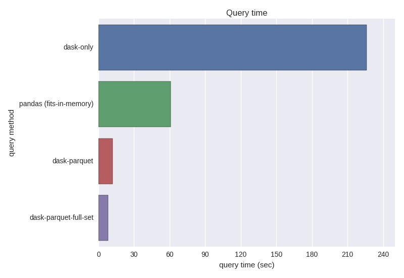

It's often the case where data scientists want to explore a data set that doesn't fit into memory. As data continues to grow in size, so too, do our tools to work with these data need to expand. Motivation for this post originates from my interest in working with openSNP data. openSNP is an open-source platform where users upload their genotype data from direct-to-consumer genetics companies like 23andMe. Raw result files are often hundreds of thousandas of records long, each record representing a location in the human genome. There are over 4,000 raw result files in the openSNP data however, my laptop runs a VirtualBox with only 5GB RAM, which meant I needed to find some clever solutions beyond the standard pandas library in order to work with this much data. This post describes one of several applications that can benefit from out-of-core computing.
Download the openSNP data¶
openSNP has over 40 GB of genotype & phenotype data stored as text files!
For the purposes of this demo, the analysis will be limited to only the 23andMe files. Below are a few shell commands to get the raw data, create a directory and extract 23andMe files.
%%sh
wget https://opensnp.org/data/zip/opensnp_datadump.current.zip
unzip opensnp_datadump.current.zip
# Isolate the 23&me; files
mkdir gt23
mv opensnp_datadump.current/*.23andme.txt* gt23/
# how many 23&me; genotype files?
find gt23/ -type f | wc -l
Here's a look at an example 23andMe result file, the header is commented out with # then there are 600,000+ rows of genotype data.
Extract a reasonable test set¶
For this demo exercise, let's use a manageable subset of the full openSNP data.
%%sh
mkdir gt23_testset
cp gt23/user21* gt23_testset/
import glob
allFiles = glob.glob("gt23_testset/*.txt")
%%sh
du -h gt23_testset/
Pure pandas¶
First, start with a pure pandas read_csv solution, something that should be familiar to Python data scientists. Let's try to create a large DataFrame in memory. join can accomplish this task, even though it's an expensive operation, the test data is small enough that we can successfully execute it.
import re
import pandas as pd
%%time
gtdf = pd.DataFrame(index=['rsid']) #empty DataFrame
for file_ in allFiles:
#extract the userid
match = re.search('user(\d+)', file_)
userid = match.group(1)
df = pd.read_csv(file_,
comment='#',
sep='\t',
header=None,
usecols=[0,3],
error_bad_lines=False,
names=['rsid', userid],
dtype={'rsid':object,
'genotype':object},
index_col=['rsid']
)
gtdf = gtdf.join(df, how='outer')
gtdf.dropna().head()
On the test set of 43 files, the entire DataFrame fits into memory.
However, using this pure pandas method on the entire openSNP data set of 1,915 files would eventually
crash the computer because it would run out of pyhsical memory.
Dask -- parallel out-of-core DataFrame¶
Enter dask, a parallel Python library that implements out-of-core DataFrames. It's API is similar to pandas, with a few additional methods and arguments. Dask creates a computation graph that will read the same files in parallel and create a "lazy" DataFrame that isn't executed until comptue() is explicitly called.

import dask.dataframe as dd
%%time
# won't actually read the csv's yet...
# similar read_csv() as pandas
ddf = dd.read_csv('gt23_testset/*.txt',
comment='#',
sep='\t',
header=None,
usecols=[0,3],
error_bad_lines=False,
names=['rsid', 'genotype'],
dtype={'rsid':object,
'genotype':object})
# Dask defaults to 1 partition per file
ddf
%%time
# this operation is expensive
ddf = ddf.set_index('rsid')
The dask compute() method provides familiar results. Since we didn't join the dask DataFrame, let's investigate one record (or one SNP).
Remember, in contrast to gtdf, ddf isn't in memory so it will take longer to get this result.
%%time
# dask DataFrame
ddf.loc['rs1333525']['genotype'].value_counts().compute()
%%time
# pure pandas DataFrame
gtdf.loc['rs1333525'].value_counts()
At first blush, the computation times are deceiving. As expected, the dask method took longer because of the lazy computation, it still had to read all the files and then perform the operation. However, when you consider the 8 minutes 15 seconds required to join gtdf DataFrame from cell 6 above in addtion to the 1 minute 1 second for gtdf.loc[rs13333525'].value_counts(), that's 9 minutes 16 seconds. In contrast, the dask method required 3 steps. First setting the computation graph (cell 9) was < 1 second. So the real comparison comes from the 4 minutes 45 seconds to set the index (cell 10) and 3 minutes 46 seconds to perform ddf.loc['rs1333525']['genotype'].value_counts().compute() (cell 12) for a grand total of 8 minutes 31 seconds. Seems like a marginal speedup on our test data of only 43 files. The real power of dask comes into play when you can't fit the DataFrame into memory.
Increase query peformance -- Convert .txt/.csv to Parquet!¶
It would be nice to speed up the dask queries so we can work with the DataFrame for downstream analysis in a reasonable amount of time.
The solution is to store the raw text data on disk in an efficient binary format. A popular choice for this is traditionally HDF5, but I chose to use parquet becuase
HDF5 can be tricky to work with. Dask uses the fastparquet implementation.
%%time
dd.to_parquet('gt23test_pq/', ddf)
Essentially, what we've done to this point is convert .txt files to parquet files. How much performance is really gained from this?
Revisiting the dask DataFrame, ddf, remember that took 3 minutes and 46 seconds to compute value_counts():
# using dask with fastparquet, lazy, so nothing computed here...
pqdf = dd.read_parquet('gt23test_pq/', index='rsid')
%%time
pqdf.loc['rs1333525']['genotype'].value_counts().compute()
Parquet offers a noticeable performance increase for querying data, even with this small validation set of 43 files. Scaling this up to 1,915 files, the parallel .txt version, ddf, took 5+ hours to execute value_counts() for one SNP.
to_parquet on the 1,915 file DataFrame took a couple hours. Once you see the query performance improvements, it's well worth the up-front cost of converting from .txt or .csv to parquet.

Performance on the entire openSNP data set¶
I pre-computed the parquet files for the entire gt23 directory using the same commands above. Some malformed files needed to be cleaned and/or removed.
%%sh
find gt23_pq/ -type f | wc -l
allpqdf = dd.read_parquet('gt23_pq/', index='rsid')
%%time
allpqdf.loc['rs1333525']['genotype'].value_counts().compute()
These results highlight the far superior performance of parquet over .csv or .txt. Additionally, dask proved it's value as an easy-to-use tool when physical memory is a constraint.
By now you've probably noticed I wasn't able to assign the user identifier to each column. dd.read_csv() assumes the column names in each file are identical.
Implemenation on the entire openSNP dataset¶
The dask and parquet portion of the tutorial have concluded. I wanted to show how easy dask and parquet make it to quickly compare variant frequencies in the openSNP data to exAC data. Here we'll define a function to extract variant frequencies from exAC, then compare to openSNP frequencies.
from urllib.parse import urlparse
from urllib.parse import urlencode
from urllib.request import urlopen
import json
def ExacFrequency(rsid):
try:
exac = {}
request = urlopen('http://exac.hms.harvard.edu/rest/dbsnp/{}'.format(rsid))
results = request.read().decode('utf-8')
exac_variants = json.loads(results)['variants_in_region']
for alt_json in exac_variants:
exac_allele = alt_json['ref']+alt_json['alt']
exac_freq = alt_json['allele_freq']
exac[exac_allele] = exac_freq
except:
return {'n/a':0}
return exac
brca2snps = ['rs766173', 'rs144848', 'rs11571746', 'rs11571747',
'rs4987047', 'rs11571833', 'rs1801426']
df = pd.DataFrame(columns=['rsid', 'gt', 'source', 'varFreq'])
for snp in brca2snps:
Osnp_alleles = allpqdf.loc[snp]['genotype'].value_counts().compute() #dask
Osnp_alleles = Osnp_alleles.to_dict()
opensnp_N = sum(Osnp_alleles.values())
Osnp_freqs = {alt: AC/float(opensnp_N) for alt,AC in Osnp_alleles.items()}
exac_freqs= ExacFrequency(snp)
for gt,freq in exac_freqs.items():
df = df.append({'rsid':snp, 'gt': gt, 'source':'exAC', 'varFreq':freq }, ignore_index=True )
for gt,freq in snp_freqs.items():
if gt in exac_freqs:
gt = gt
elif gt[::-1] in exac_freqs:
gt = gt[::-1]
else:
continue
df = df.append({'rsid':snp, 'gt': gt, 'source':'Osnp', 'varFreq':freq }, ignore_index=True )
%pylab inline
import seaborn as sns
sns.barplot(x="rsid", y="varFreq", hue="source", data=df);
![](data:image/png;base64,iVBORw0KGgoAAAANSUhEUgAAAh4AAAF9CAYAAABLS2EjAAAABHNCSVQICAgIfAhkiAAAAAlwSFlz
JElSaww8JElSaww8JElSaww8JElSaww8JElSa/4Ho4GCnFupnCUAAAAASUVORK5CYII=)
I hope you find this post useful and think about using dask and parquet when working with structured text files. I really encourage you to check out the dask and parquet documentation and follow along on some of their tutorials. Thanks for reading, comments and code improvements welcome!
Comments
comments powered by Disqus